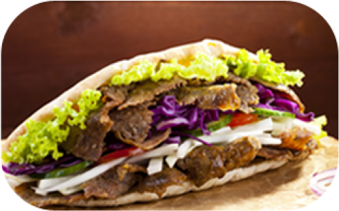

Home
Homemade Doner Kebab

Description
Doner kebab is a traditional Turkish dish that has become popular all over the world. This homemade version of Doner Kebab meat can be made using either lamb or beef, although beef is a popular choice in Australia. The meat is marinated with spices and herbs and then cooked slowly on a rotisserie until tender and juicy.
Although this version is a miniature one, the end result is very similar to the giant ones you see in kebab shops. To serve, the meat is sliced thinly and fried gently until the edges are golden brown. The aroma of the dish is so delicious that it will fill your home with the irresistible smell of a kebab shop.
Doner kebab is typically served with a variety of accompaniments, such as salad, pickles, sauces, and bread. It is a perfect dish for a quick and satisfying meal, and is loved by people of all ages. Whether you are a fan of lamb or beef, this homemade version of Doner Kebab meat is sure to impress your taste buds with its amazing flavors and tender texture.
Ingredients
- 1 kg / 2 lb lamb or beef mince (ground meat) , preferably 15% fat (Note 1)
- 200g / 7oz streaky bacon , roughly diced (Note 2)
- 1 onion , diced (brown, yellow, white)
- 2 clove garlic , roughly chopped
- 1 tbsp vegetable oil or olive oil (for frying)
- 1 tsp dried oregano
- 2 tsp ground cumin
- 2 tsp ground coriander
- 1/2 tsp cinnamon
- 3 tsp salt , kosher/cooking salt (Note 3)
- 1 tsp black pepper
- 8 flatbreads (Lebanese bread authentic!)
- 1 iceberg lettuce , finely shredded
- 6 tomatoes , halved and sliced
- 2 red onions , finely sliced
- Hummus
- Yogurt sauce , optional (recipe Note 8)
- More Sauce options: chilli sauce/Sriracha (I use this), BBQ, sweet chilli, tomato sauce/ketchup
- Extra options: tabbouleh, shredded cheese
Steps
Marinate Meat
- Mix beef or lamb with all the Spices - mix well using your hands.
- Cover and refrigerate 2 hours minimum, or up to 24 hours.
Preparation:
- Preheat oven to 170°C/ 325°F (150°C fan).
- Line baking pan with foil.
- Check to ensure skewers are long enough to prop on the sides of the pan. (Note 5)
Puree Meat:
- Place onion, bacon and garlic in a 8 cup/2L+ food processor. Blitz until it becomes a paste (video at 29 sec),~30 sec on high, scraping down sides as you go.
- Add meat and blitz on low until it becomes a paste (video at 42 sec), scraping down sides (~1 min for powerful food processors, 2 min for less powerful). (Note 4)
Shape Doner Kebab Meat:
- Turn meat out onto work surface. Wet hands with water, then shape into an even block 20cm/8" long.
- Place 2 x 60cm / 2 feet long pieces of foil overlapping each other by 1/3. (Note 6)
- Place meat on the end of the foil, then roll it up, tightly wrapping it in the foil.
- Twist the ends firmly to form a log 25cm/10" long, then snip off excess foil. Roll into even log.
- Thread skewers through the log.
- Place log elevated in pan by propping skewers on the edge of the pan. (Note 7)
Cooking:
- Cook for 1 1/2 hours, turning once after 1 hour, until the log reaches 70°C/160°F (up to 80°C/175°F is fine). The log is cooked at this point.
- Remove foil from log but leave skewers in place.
- Increase oven heat to 250°C/480°F, or as high as your oven can go if it can't reach this.
- Bake for 10 to 15 minutes, rotating once, until browned all over.
Shaving / Pan frying:
- Remove skewers then stand the meat upright.
- Shave meat thinly - carve as much as you intend to use.
- Heat oil in a skillet over medium high heat. Cook shaved meat lightly coloured but still "floppy" (not crisped). Use immediately for Doner Kebabs!
Doner Kebabs:
- Smear hummus on warmed flatbread. Top with lettuce, tomato, and onion.
- Pile on Doner Kebab Meat. Drizzle with sauce(s) of choice.
- Roll up tightly, wrap in foil if desired (to hold together). Grab and devour!